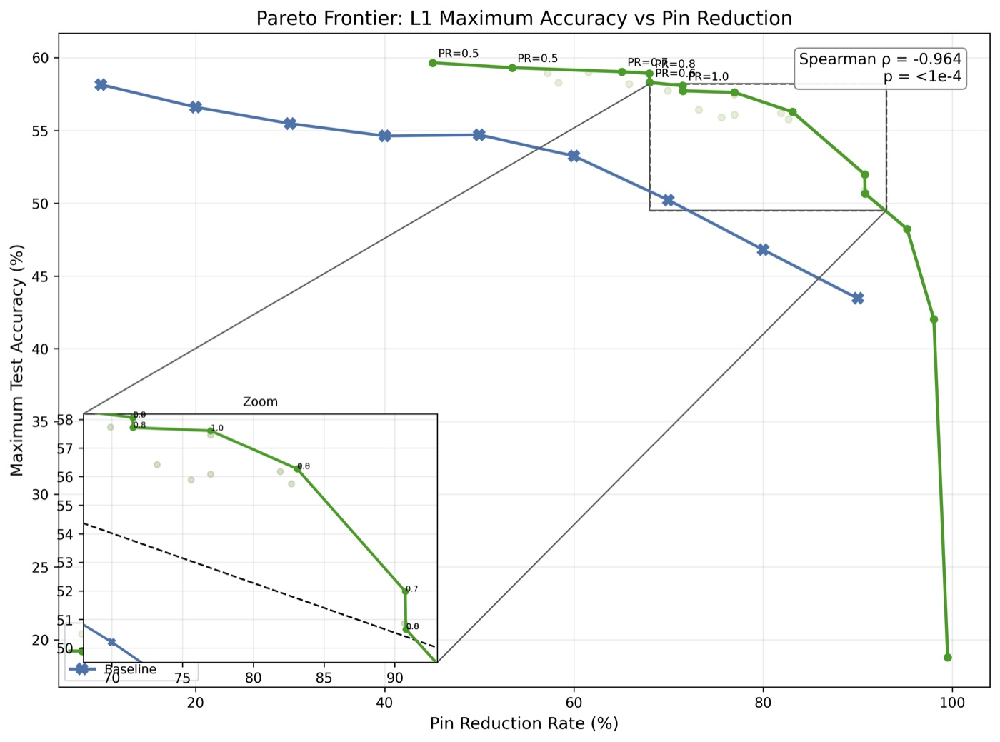
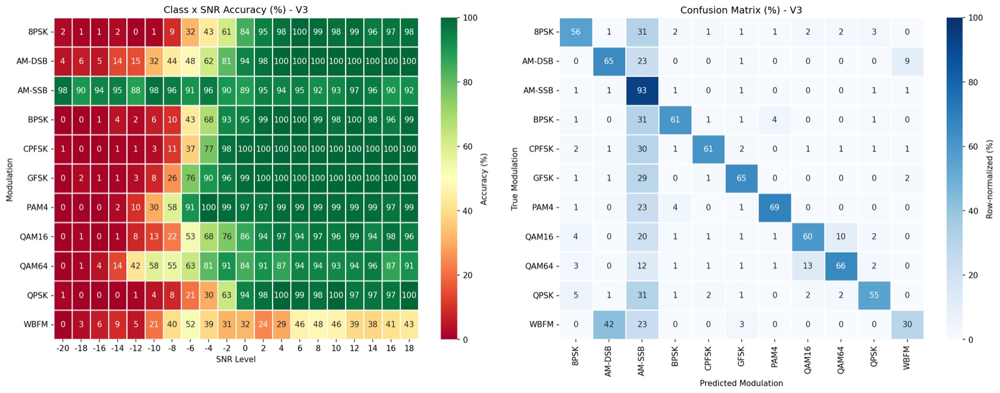
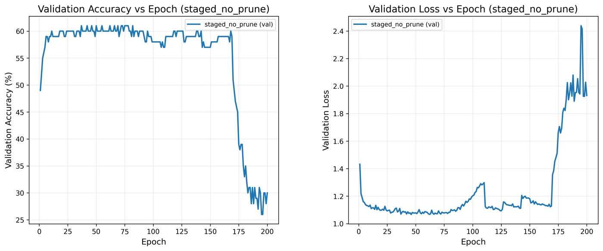
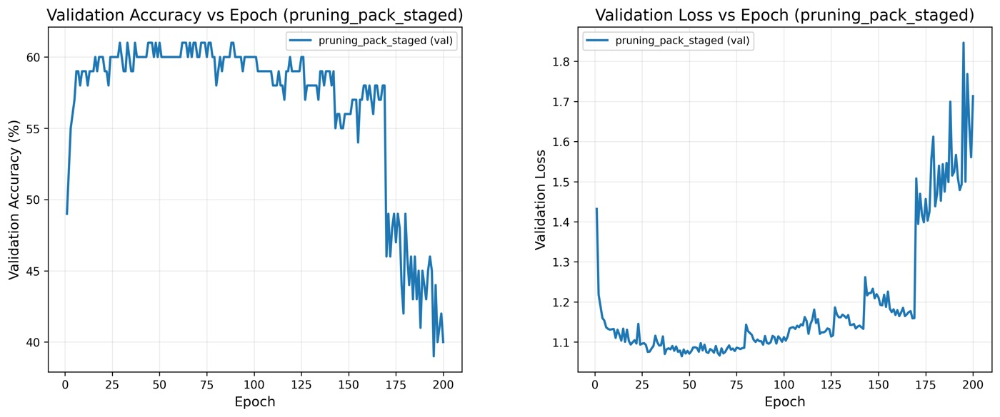
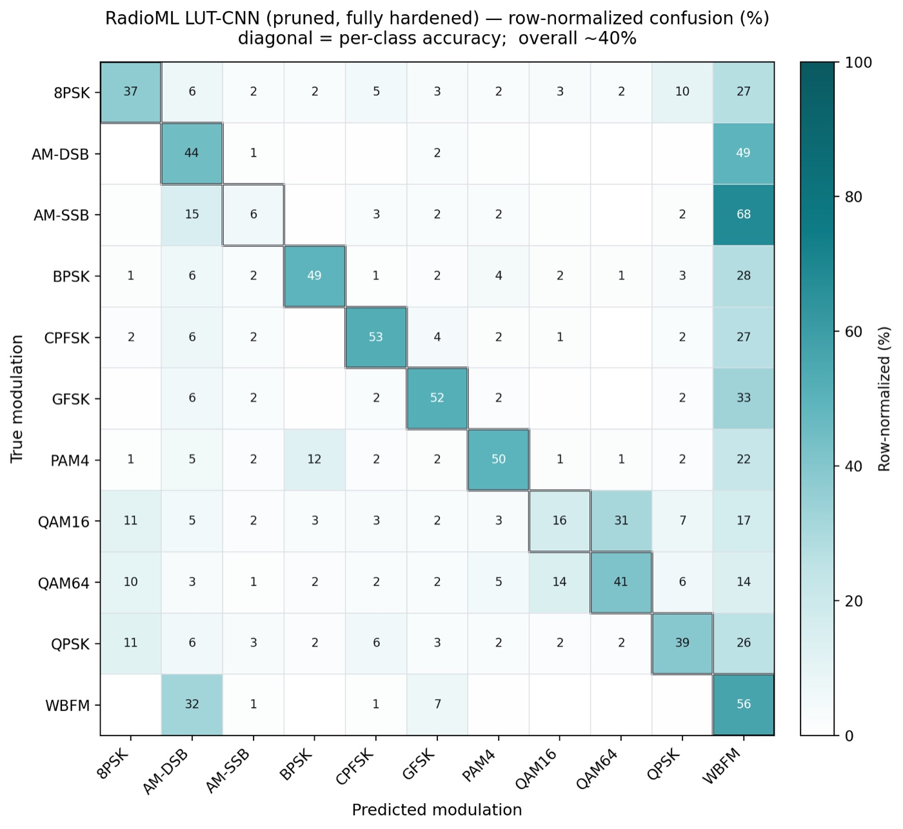
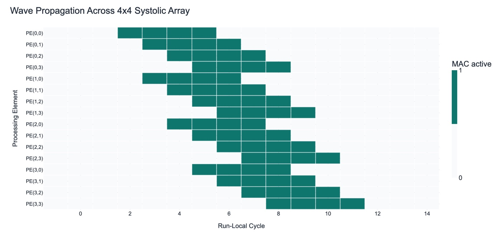
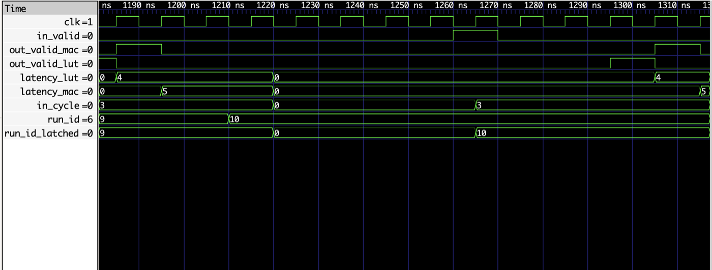
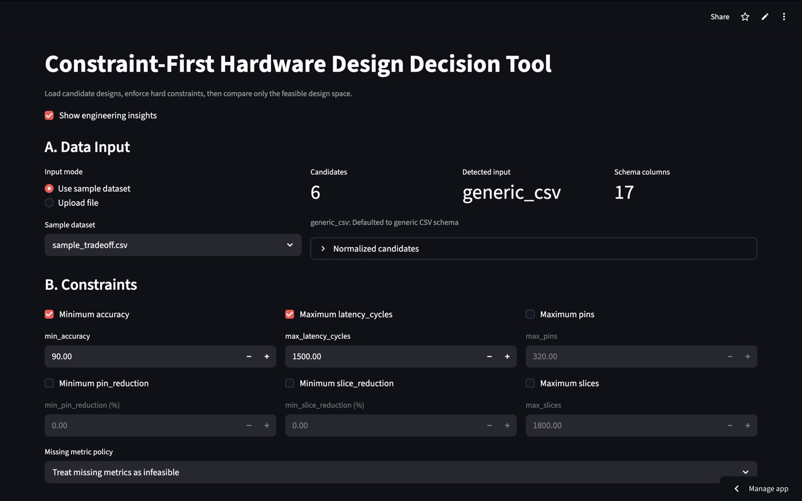

I build hardware-aware systems, measure how they actually behave, and let the measurements decide the design.
UROP1100 · Advisor: Prof. Wei Zhang, HKUST · PyTorch · CIFAR-10 + RadioML
On an FPGA the unit of compute is a lookup table, not a multiplier — yet networks are usually trained as if they'll run on a CPU and quantized only afterward. I worked on the alternative: training where hardware cost (pruned fan-in, packable structure) is part of the objective, then measuring what that costs in accuracy. Two parts — first characterizing an existing LUT-CNN framework, then porting it to a new signal domain.
I reverse-engineered an existing LUT-CNN training/pruning pipeline; my contribution was the analysis layer — a pruning-correctness fix and a 40+ run sweep of the trade-off. The fix: global sensitivity pruning silently missed its sparsity target whenever weight scores tied at the threshold.
With pruning correct, I swept sparsity × pack-ratio. The prepared frontier dominates the naive baseline at every pin-reduction level (Spearman ρ = −0.96, p < 1e-4): aggressive configs reach ≈86% pin / ≈81% slice reduction, and the best run holds 80.96% accuracy at 84% pin / 71% slice reduction.

Before touching LUTs I built a conventional 1-D CNN baseline (~60–62%; a two-branch IQ + instantaneous-frequency fusion was best at 61.9%) and ran failure analysis to see what the task actually needs.

Then I ported the hardware-aware workflow to LUT operators: bitplane IQ preprocessing, LUTQuant1d/LUTConv1d, a 6-stage residual backbone, and — critically — conv and activation hardening decoupled, forcing binary activations only after every conv layer hardens (enabling them early collapsed training). The schedule is ordered by the hardware transition: prune while soft → recover → harden.
The key experiment is an ablation — same hardening flow, pruning-side prep (pairing + BIB + pruning + recovery) on vs. off:


Pruning removed real structure — layer-wise mask sparsity rises 0.23 → 0.42 across depth — giving ≈38% input-pin pruning and an estimated ~31% slice reduction:
| Layer | conv0 | conv1 | conv7 | conv8 | conv13 | conv14 |
|---|---|---|---|---|---|---|
| sparsity | 0.23 | 0.29 | 0.28 | 0.33 | 0.37 | 0.42 |
The LUT model's own class behavior confirms the diagnosis — after full hardening it fails on exactly the classes the baseline analysis flagged:

Verilog + Python · 4×4 array · VCD + trace verification
Full 4×4 array — controller (FSM IDLE→LOAD→STREAM→DRAIN→COLLECT→DONE), loader, PE mesh, collector, testbench. Measured latency is 13 cycles vs a theoretical 12; the extra cycle is control overhead, measured rather than assumed. A trace.csv replay recovers the dataflow beyond raw waveforms.

trace.csv.Verilog · controlled datapath comparison · event-based latency
Two inference datapaths, identical inputs and control, isolating one added MAC register. Latency is read from real signal events (out_valid rising edge minus in_valid), not assumed depth. Result: LUT 4 cycles, MAC 5 — the same +1 across all 18 runs, traceable to exactly one pipeline register.

latency_lut = 4, latency_mac = 5 — the MAC's out_valid lands one cycle later.Python · Streamlit · pandas — turns experiment/RTL outputs into design decisions
A workflow that filters infeasible configs first, reduces the rest to a Pareto frontier, then gives an explainable recommendation and sensitivity sweep — constraint-first, not blind scoring. Live app →

Open-source digital IC design flow · Verilog HDL
Designed FSM-based logic (clocked adder, digital lock) in Verilog and took an RTL-to-GDS design through synthesis and place-and-route on the Tiny Tapeout platform — first hands-on exposure to the full hardware flow behind the RTL work above.